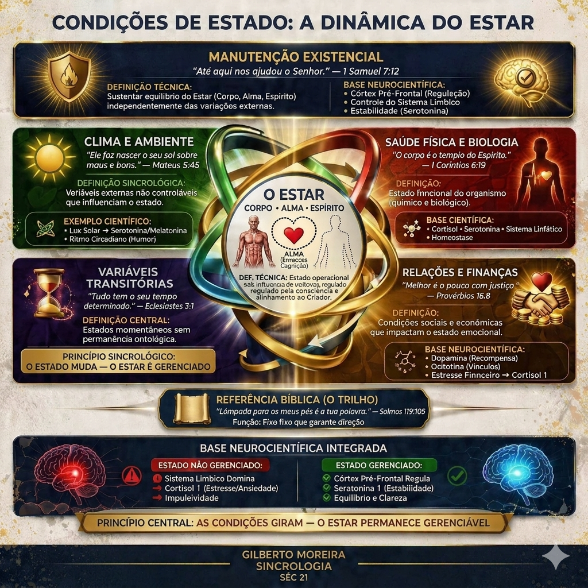

O Estado como Variável Gerenciável
Na Sincrologia Bíblica, as "Condições de Estado" referem-se às circunstâncias transitórias que influenciam o nosso Estar. O formando deve aprender a discernir entre o que é uma lei fixa (Secundário) e o que é uma condição passageira de estado.

O desenvolvimento pessoal reside na capacidade de manter a manutenção existencial mesmo sob condições adversas, qualificando o Estar através do suporte emocional que a Palavra oferece para cada situação.